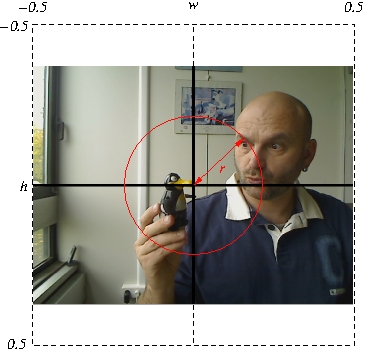
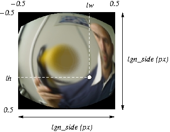
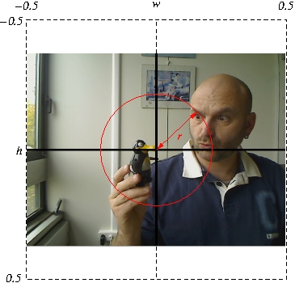
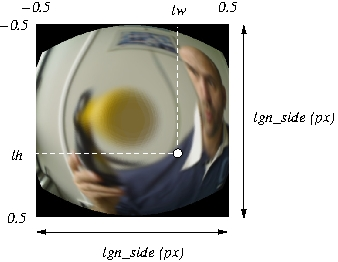
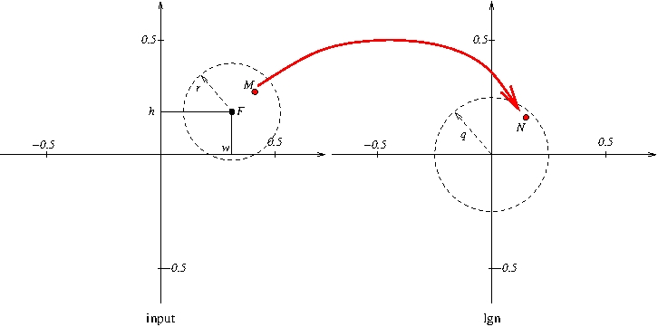

Lgn2V1
Overview
This modules compute a human retinal inspired (roughly...) image
magnification. The input image is analyzed according to a
focus point (w,h). The area around that point, i.e. inside the
red circle, is magnified, while the area outside the circle is
reduced.

The distorted image is processed such that colors with a significant hues are kept and enhanced. This leads to the following result.


The distorted image is processed such that colors with a significant hues are kept and enhanced. This leads to the following result.

Computation
Distortion
The distortion consists in associating to each point M in the input image a position N in the lgn image. 
If F denotes the focus point, the transormation is
\frac{M-F}r = \left(\frac Nq \right)^d
.
Blur and colors
Before being distorted, the image is blurred with a Gaussian filter. The parameter \sigma of the Gaussian (expressed in the position units of source image, i.e width=1) is denoted blur.
ROS integration
The node interface
The lgn2v1 module provides a single node.
Nota : When publishing on the look_at topic, the node becomes insensitive to publications on the shift topic, for several miliseconds (see the focus_freeze parameter).
roslaunch lgn2v1 lgn2v1-demo.launchThe communication with the node is realized by topics and a dynamic reconfiguration of parameters. The topic are the following ones:
| Name | Message | Direction | Meaning |
| in | sensor_msgs/Image | subscribe | input image |
| gaze | sensor_msgs/Image | publish | input image with focus |
| lgn | sensor_msgs/Image | publish | lgn image |
| lookat | geometry_msgs/Point | subscribe | set focus to (w,h,0) |
| focus | geometry_msgs/Point | publish | get the current focus position(w,h,0) |
| shift | geometry_msgs/Point | subscribe | set focus such as the point (lw,lh,0) in lgn projects now at lgn center |
Nota : When publishing on the look_at topic, the node becomes insensitive to publications on the shift topic, for several miliseconds (see the focus_freeze parameter).
Examples
rostopic echo -n 1 /lgn2v1/focus rostopic pub -1 /lgn2v1/lookat geometry_msgs/Point -- 0.25 0.25 0 rostopic echo -n 1 /lgn2v1/focus rostopic pub -1 /lgn2v1/shift geometry_msgs/Point -- -0.25 -0.10 0 rostopic pub -1 /lgn2v1/shift geometry_msgs/Point -- -0.25 -0.10 0 rostopic pub -1 /lgn2v1/shift geometry_msgs/Point -- -0.25 -0.10 0 rostopic echo -n 1 /lgn2v1/focus rostopic pub -1 /lgn2v1/lookat geometry_msgs/Point -- 0 0 0